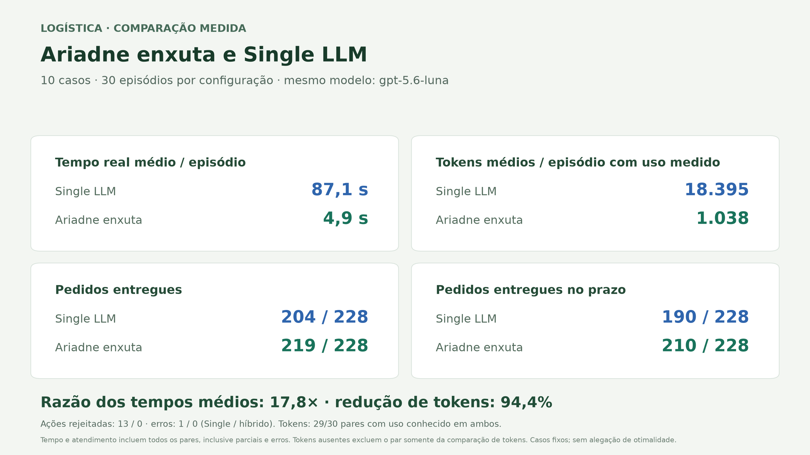
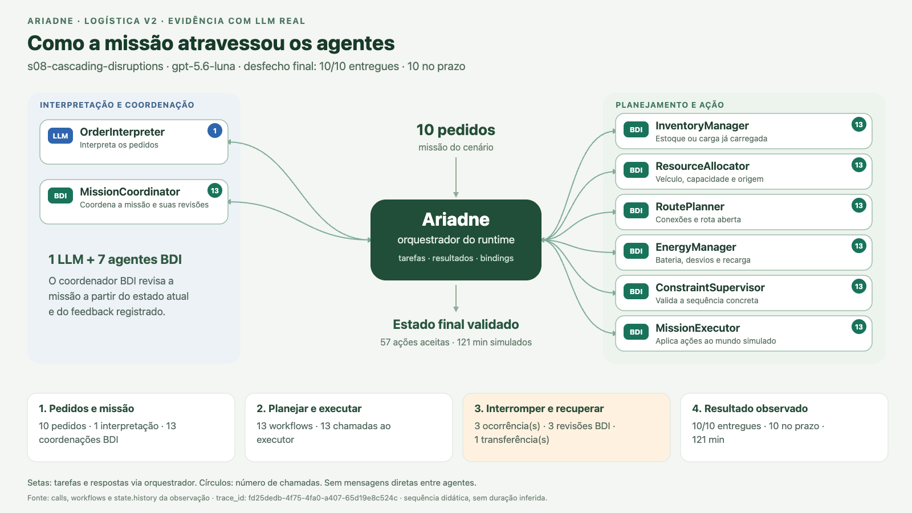
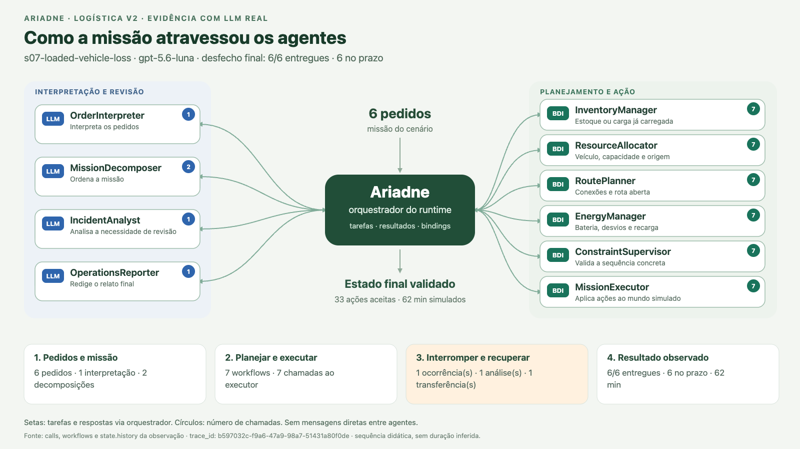

ARIADNE · LOGÍSTICA · MATERIAL PRESERVADO
Cooperação entre agentes LLM e BDI
Figuras de tarefas atravessando o runtime e resultados da comparação em dez casos complexos, com três repetições por configuração. Este material abre offline e não inicia chamadas de modelo.
Resultado medido

60/60 observações concluídas. O tempo médio foi 17,8 vezes menor e houve 94,4% menos tokens nos mesmos 29 pares com uso conhecido. Um timeout do Single LLM permanece na análise. Sem o par desse timeout, a razão dos tempos continua em 18,0 vezes. No caso de prazos apertados, o Single teve mais entregas pontuais: 17/24 contra 15/24. A evidência é desta suíte fixa, usada no desenvolvimento.
Relatório e limites · Gráficos por caso e CSVs · Resultados JSON · Conferência das fontes
Como a missão atravessou oito agentes

O exemplo contém dez pedidos e três ocorrências, incluindo pane e bloqueios. A animação preserva chamadas, task IDs e efeitos do domínio; seu ritmo é didático. Cada seta passa pelo orquestrador. Os eventos reais do runtime foram correlacionados às 92 chamadas deste episódio.
Arquitetura original com dez agentes

Player original · GIF · Origem e regeneração de todas as figuras